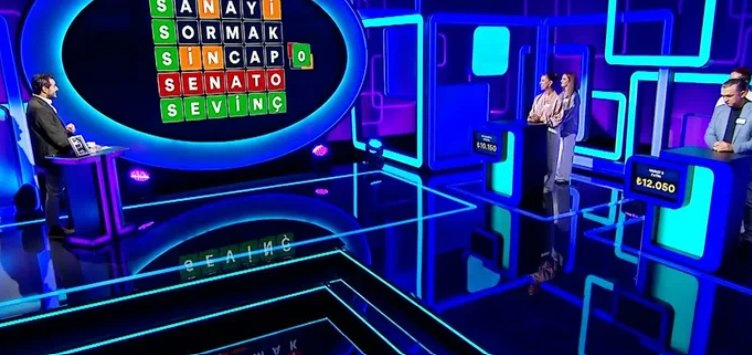
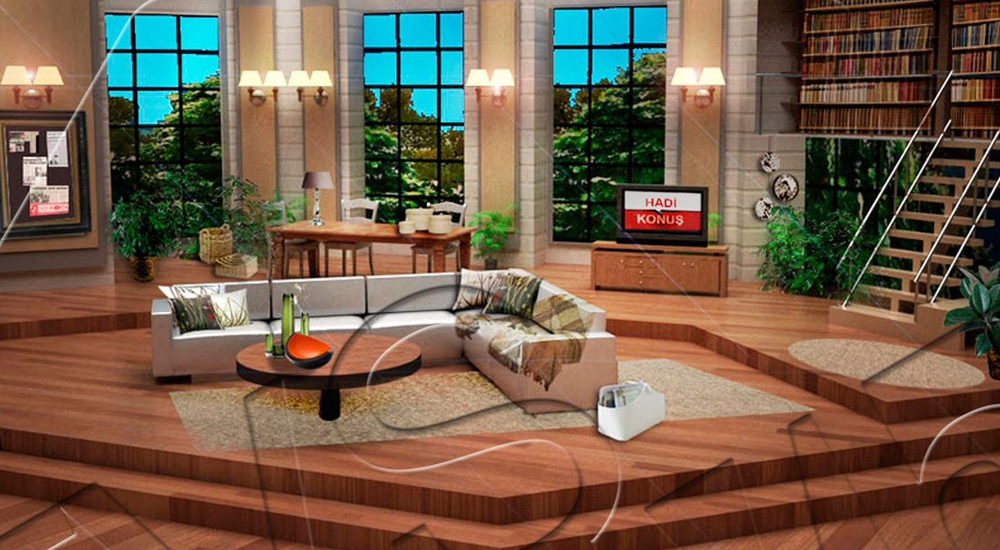
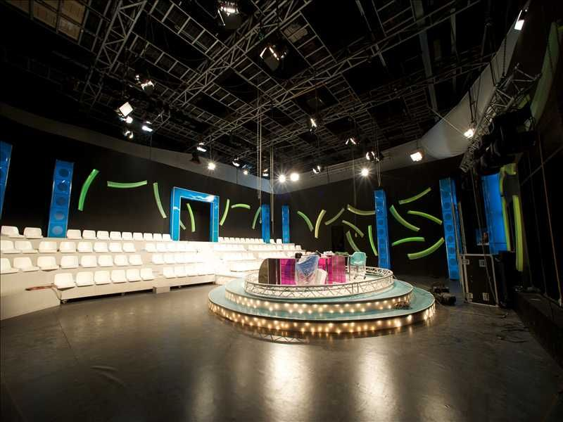
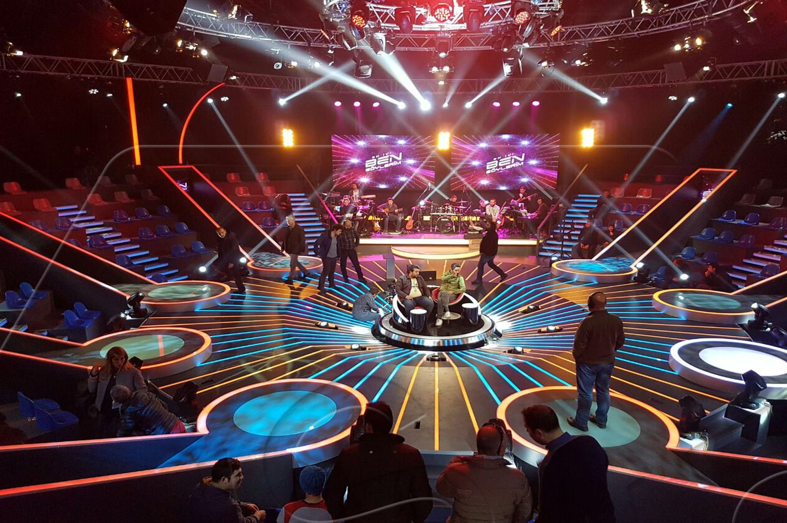
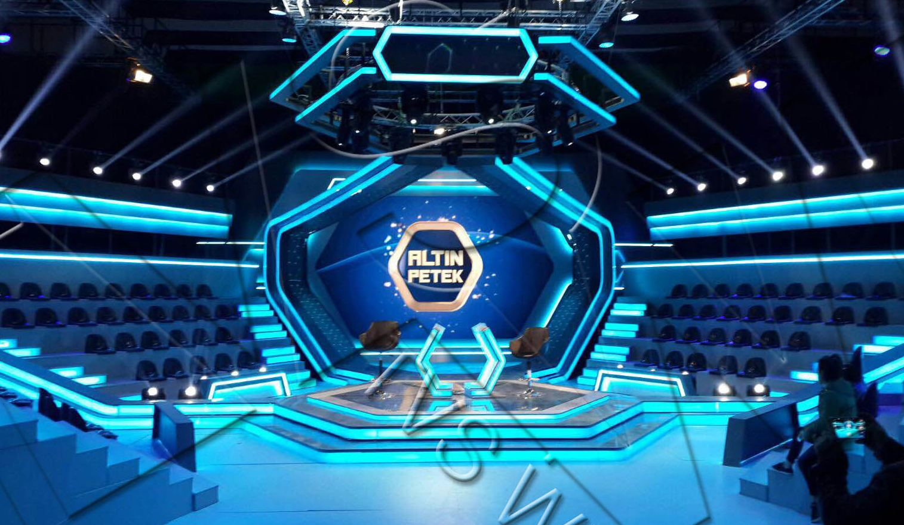
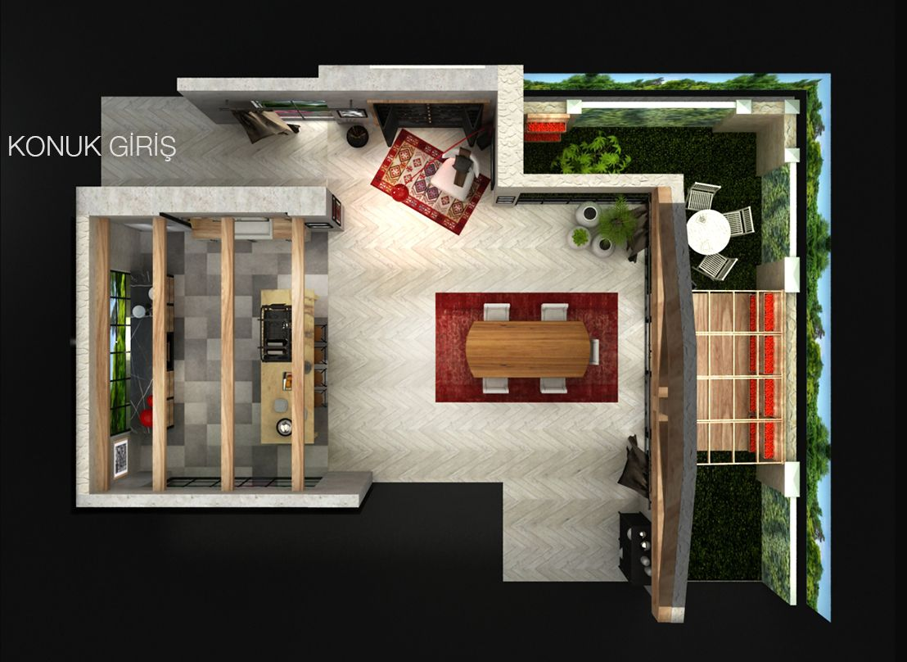
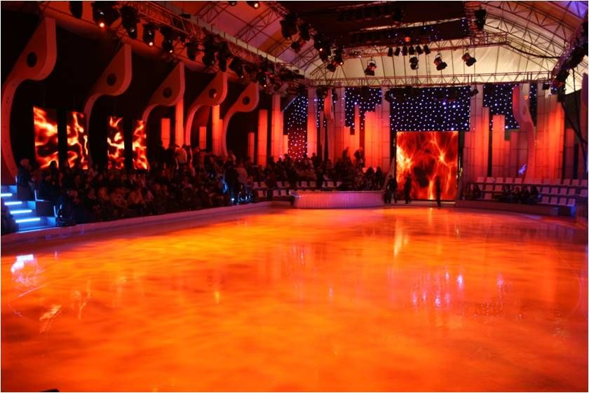
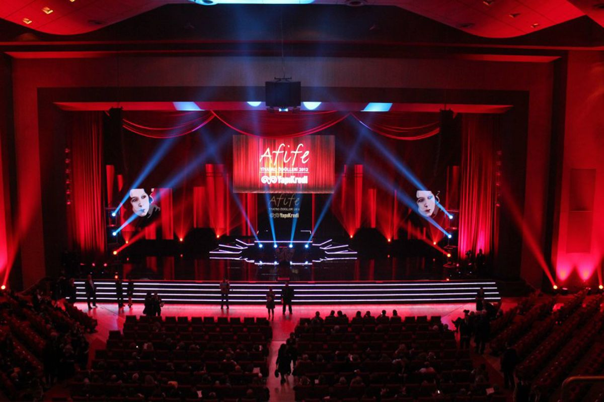

Lingo
TRT 1 · استوديوهات كاغيتهانة

استوديوهات، كاميرات، غرف تحكم، صوت، إضاءة، شاشات LED وديكور: كل ما يحتاجه البرنامج التلفزيوني، من الرسم الأول حتى البث المباشر، بفريق واحد. من إسطنبول إلى الدوحة، ومن طرابلس إلى دهوك، ومن موسكو إلى فرنسا.
هذا الموسم
برامج تُعرض حالياً، تُصوَّر في استوديوهاتنا ويوصلها فريقنا إلى البث.

TRT 1 · استوديوهات كاغيتهانة

NOW · استوديوهات كاغيتهانة
ليبيا
قسمان
الفريق الذي يصمّم الديكور هو نفسه الذي يبنيه ويضيئه ويوصله إلى البث. لا مقاولين من الباطن، والمسؤولية في جهة واحدة.

TVS Production / TVS Studios
في استوديونا في إسطنبول أو في موقعكم: إنتاج متكامل بالكاميرات وغرفة التحكم والإضاءة.

TVS WorkHouse
المفهوم، التصميم ثلاثي الأبعاد، التصنيع والتركيب لبرامج الأخبار والرياضة والمسابقات والترفيه. مشاريع المتاحف والمساحات.
جذورنا
أكثر من ثلاثين عاماً، من مواقع تصوير الأفلام إلى استوديوهات البث.
دخول القطاع بخدمات الإنتاج السينمائي.
استوديوهات ATA للأفلام: خمسة بلاتوهات معزولة صوتياً على مساحة 6,500 م² في إسطنبول، صمّمناها وبنيناها.
انضمام استوديوهات TEM إلى استوديوهات ATA للأفلام.
تأسيس TVS Production.
موسكو: استوديوهات beIN Sports لكأس العالم.
قطر: ديكورات البث والملاعب لكأس العالم.
برنامجا Lingo وKumbara في استوديوهاتنا في كاغيتهانة، وأعمال مستمرة للجزيرة وATV.


عابرون للحدود
مشاريع تسليم مفتاح لقنوات البث والمؤسسات العامة، من الخليج إلى شمال أفريقيا، ومن أوروبا إلى الأمريكتين.
تصميم وتنفيذ ديكورات الاستوديوهات، شاشات LED وأعمال التجديد في مختلف قنوات الشبكة.
ديكورات استوديوهات beIN في موسكو لكأس العالم FIFA 2018.
كأس العالم FIFA 2022: ديكورات البث، تجهيزات الملاعب وإنتاج الفعاليات.

تصميم وبناء: من أرض فارغة إلى البث، مجمّع إعلامي ببلاتوهات معزولة صوتياً، يضم قناتين تلفزيونيتين وطنيتين وإذاعة وصحيفة.
تنظيم حفل افتتاح المطار.
تصميم المتحف وتنفيذه.
شاشات LED وإضاءة المطار.
احتفالات 17 فبراير وعيد التحرير في 23 أكتوبر، فعاليات في ريكسوس، مؤتمرات عديدة، افتتاحات وإطلاقات.
ديكورات استوديوهات القناة.
تصميم ديكور استوديو بث.
تفاصيل المشاريع وصورها قريباً.
وفّرت TVS جميع شاشات LED في الاستوديوهات الجديدة وتواصل تقديم الدعم الفني.
ديكور استوديو الأخبار الرياضية وشاشات LED.
ديكورات استوديوهات القناة.
استوديو التصميم لدينا
يصمّم فريقنا في إسطنبول ديكورات ومسارح لبرامج الأخبار والرياضة والمسابقات والترفيه، وحفلات الجوائز، والمتاحف والفعاليات. ولأن التصميم والتنفيذ تحت سقف واحد، فكل ديكور نرسمه قابل للبناء فعلاً، وميزانيته واضحة منذ اليوم الأول.
الفكرة الأولى، انطلاقاً من صيغة البرنامج وزوايا الكاميرا وهوية العلامة.
صور واقعية بتقنية 3ds Max، لترى الاستوديو قبل أن يُبنى.
مخططات AutoCAD، توزيع شاشات LED والإضاءة، قائمة المواد والتكاليف.
تصنيع في الورشة، تركيب في الموقع، دمج الإضاءة وشاشات LED، وتسليم جاهز للبث.
من تصميم TVS WorkHouse
مختارات من الاستوديوهات التي صمّمناها وبنيناها لأبرز القنوات التركية.













مع من نعمل
قنوات ومؤسسات بنينا لها استوديوهات وصمّمنا لها مسارح وعملنا معها على مدى السنوات.
TVS Group
أعمالنا خارج مجال الإعلام تعمل بعلاماتها الخاصة.
بناء بنظام تسليم المفتاح وتطوير مشاريع، إسطنبول.
smartyapim.com ← البحرية · اليخوترحلات إبحار وتأجير يخوت من فتحية.
sailamor.com ←تشغيل أسطول القوارب وإدارة اليخوت.
استشارات تكنولوجيا البث وتكامل الأنظمة. مشاريع تقنية خارج تركيا، منها القراءة الآلية لعدادات المياه وأتمتة أجهزة الصراف الآلي.
الاستوديو والمكتب
برنامج جديد، تجديد استوديو، فعالية أو مشروع خارج تركيا: نحدّد معكم المتطلبات في اللقاء الأول ونعود إليكم بتصميم وميزانية.